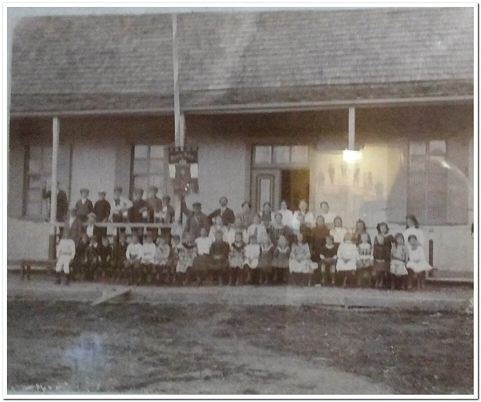

Ley de Instrucción Primaria Obligatoria

A comienzos del siglo XX, una parte importante de la población chilena era analfabeta y muchos niños trabajaban desde pequeños. La Ley General de Instrucción Primaria de 1860 había establecido la gratuidad de la enseñanza primaria estatal, pero no su obligatoriedad. Durante dos décadas, liberales, radicales, profesores y organizaciones obreras impulsaron la obligatoriedad, mientras sectores conservadores la resistieron en defensa de la libertad de enseñanza y del derecho de los padres a decidir sobre la educación de sus hijos. Obras como El problema nacional (1917), del educador Darío Salas, alimentaron el debate.
La Ley 3.654, promulgada el 26 de agosto de 1920 bajo el gobierno de Juan Luis Sanfuentes, estableció la obligación de cursar al menos cuatro años de educación primaria, ratificó la gratuidad de la escuela estatal y fijó responsabilidades para los padres y el Estado.
Su aplicación fue gradual y desigual por la falta de escuelas y profesores, sobre todo en zonas rurales, pero marcó un hito en la expansión del sistema educativo y en el papel del Estado en la formación de ciudadanos. Formó parte de las respuestas a La cuestión social y antecedió a las reformas de la República Presidencial.
Versión para niños
Hace un poco más de cien años, muchos niños y niñas de Chile no iban a la escuela: tenían que trabajar o vivían muy lejos. El 26 de agosto de 1920 se promulgó en Santiago una ley muy importante: desde entonces, todos los niños debían ir a la escuela primaria por lo menos cuatro años, y las escuelas del Estado eran gratuitas. Los padres tenían la obligación de enviarlos. Así, muchos más niños aprendieron a leer y escribir.
Para maestros
Nivel sugerido: 1° medio
Objetivo: Comprender la importancia de la Ley de Instrucción Primaria Obligatoria en la ampliación del derecho a la educación y en el rol del Estado durante el siglo XX.
Preguntas para la clase:
- ¿Por qué tantos niños no asistían a la escuela a comienzos del siglo XX?
- ¿Qué argumentos tenían quienes apoyaban la ley y quienes se oponían a ella?
- ¿Qué cambió en la vida de los niños con esta ley y qué desafíos educativos siguen existiendo hoy?
Actividad (20–30 min): Los estudiantes realizan un debate simulado en el Congreso de 1920: un grupo defiende la obligatoriedad y otro la libertad de enseñanza. Luego escriben una reflexión breve comparando la escolaridad obligatoria de 1920 con la actual.
Fuentes sugeridas: Biblioteca del Congreso Nacional (BCN); Memoria Chilena; Museo de la Educación Gabriela Mistral.
Objetivos de Aprendizaje (Currículum Nacional)
- 6° básico · HI06 OA 07 Explicar y dar ejemplos de la progresiva democratización de la sociedad durante el siglo XX … el acceso a la educación
- 1° medio · HI1M OA 17 Caracterizar las principales transformaciones generadas por las riquezas del salitre … de las inversiones públicas en infraestructura y en educación
- 1° medio · HI1M OA 18 Analizar las principales transformaciones de la sociedad en el cambio de siglo … el creciente protagonismo de los sectores medios
Revisión humana pendiente. Cómo se revisa · Reportar un error
Cómo citar: Historia de Chile. (2026). Ley de Instrucción Primaria Obligatoria. En Historia de Chile: atlas y línea de tiempo. https://moises-salgado.github.io/historia-de-chile/momento/ley-de-instruccion-primaria-obligatoria.html